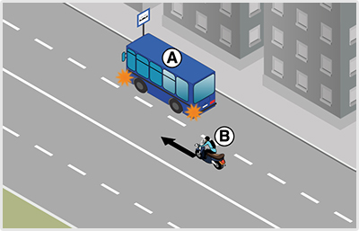
- 311. Ön a ’B’ jelű motorkerékpárt vezeti. Van-e valamilyen kötelezettsége, ha azt látja, hogy a buszmegállóból az ’A’ jelű autóbusz el kíván indulni? #703742
- Nincs, mivel az autóbusz az elindulás után a jobb szélső forgalmi sávba be tud sorolni.
- Igen, lassítással, szükség esetén megállással is lehetővé kell tennie az autóbusz belső sávba történő behajtását.
- Igen, intenzív fékezéssel lehetővé kell tennie az autóbusz sávváltását.
- 312. A ’B’ jelű motorkerékpár vezetője milyen módon köteles lehetővé tenni az ’A’ jelű autóbusz buszmegállóból történő elindulását lakott területen? #703743
- Itt az autóbusz segítség nélkül is be tud kapcsolódni a forgalomba.
- Lassítással, szükség esetén megállással.
- Akár hirtelen fékezéssel is.
- 313. Az ’A’ jelű autóbusz vezetője számíthat-e arra, hogy az érkező ’B’ jelű motorkerékpár vezetője lehetővé teszi a belső sávba történő besorolást? #703744
- Nem.
- Igen.

- 314. Melyik irányban haladhat el az ábrán látható járdasziget mellett, ha az az úttest menetirány szerinti jobb és bal oldalát választja el egymástól? #703800
- Csak jobbról, a ’B’ jelű nyomvonalon.
- Csak balról, az ’A’ jelű nyomvonalon.
- Útiránytól függően akár az ’A’, akár a ’B’ jelű nyomvonalon.
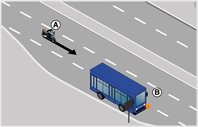
- 315. Ön az ’A’ jelű motorkerékpárt vezeti. Van-e valamilyen kötelezettsége, ha azt látja, hogy a buszmegállóból a ’B’ jelű autóbusz el kíván indulni? #704110
- Igen, lassítással, szükség esetén megállással is lehetővé kell tennie az autóbusz elindulását.
- Nincs, mivel az autóbusz több sávos útra kíván ráhajtani.
- Lassítás nélkül folytathatja útját, mivel az elinduló járművek kötelesek elsőbbséget adni az érkezők számára.
- 316. Az ’A’ jelű motorkerékpár vezetője milyen módon köteles lehetővé tenni a ’B’ jelű autóbusz buszmegállóból történő elindulását? #704111
- Lassítással, szükség esetén megállással.
- Csak lassítással.
- Akár hirtelen fékezéssel is.
- 317. A ’B’ jelű autóbusz vezetője mikor számíthat arra, hogy az érkező ’A’ jelű motorkerékpár lehetővé teszi az elindulását? #704112
- Ha az elindulási szándékát irányjelzővel jelezte.
- Ha az ajtaját becsukta.
- Amikor beáll a megállóhelyre.
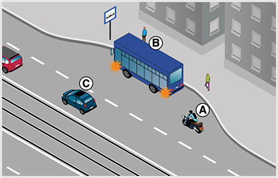
- 318. Ön az ’A’ jelű motorkerékpárt vezeti. Van-e valamilyen kötelezettsége, ha azt látja, hogy a buszmegállóból a ’B’ jelű autóbusz el kíván indulni? #704129
- Igen, lassítással, szükség esetén megállással is lehetővé kell tennie az autóbusz elindulását.
- Nincs, mivel az autóbusz olyan útra kíván ráhajtani, amelyen villamospálya van.
- Lassítás nélkül folytathatja útját, mivel az elinduló járművek kötelesek elsőbbséget adni az érkezők számára.
- 319. Az ’A’ jelű motorkerékpár vezetője milyen módon köteles lehetővé tenni a ’B’ jelű autóbusz buszmegállóból történő elindulását? #704130
- Lassítással, szükség esetén megállással.
- Csak lassítással.
- Akár hirtelen fékezéssel is.
- 320. A ’B’ jelű autóbusz vezetője mikor számíthat arra, hogy az érkező ’A’ jelű motorkerékpár lehetővé teszi az elindulását? #704131
- Ha az elindulási szándékát irányjelzővel jelezte.
- Ha az ajtaját becsukta.
- Amikor beáll a megállóhelyre.
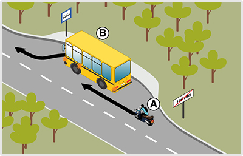
- 321. Ön az ’A’ jelű motorkerékpárt a képen látható helyen vezeti. Van-e valamilyen kötelezettsége, ha azt látja, hogy a buszmegállóból a ’B’ jelű autóbusz el kíván indulni? #704147
- Nincs.
- Igen, lassítással, szükség esetén megállással is lehetővé kell tennie az autóbusz elindulását.
- Igen, intenzív fékezéssel lehetővé kell tennie az autóbusz elindulását.
- 322. Az úttest széléről elinduló jármű vezetője köteles az úttesten haladó... #704346
- járművek és gyalogosok részére elsőbbséget adni.
- járművek és gyalogosok zavarásától tartózkodni.
- 323. Amikor járművével egy várakozóhelyről az úttestre kíván ráhajtani, akkor... #704347
- az úttesten haladó járművek részére köteles elsőbbséget adni.
- az úttesten haladó járművek kötelesek Önnek elsőbbséget adni.
- az úttesten haladó járművektől elvárható az udvariasság.
- 324. Elsőbbsége van-e a zárt pályáról az úttestre ráhajtó villamosnak az úttesten közlekedő járművekkel szemben? #704348
- Igen.
- Nincs elsőbbsége.
- 325. Köteles-e irányjelzéssel jelezni az úttest széléről történő, irányváltoztatással nem járó elindulást? #704349
- Igen, minden esetben.
- Nem
- 326. Hol kell lehetővé tenni az elindulási szándékot jelző, menetrend szerint közlekedő autóbusznak a megállóhelyről való elindulását? #704350
- Csak lakott területen.
- Csak lakott területen kívül.
- Lakott területen és lakott területen kívül egyaránt.
- 327. Válassza ki, hogy az alábbiak közül mely jármű elindulását köteles lakott területen lehetővé tenni? #704351
- A megállóhelyről elinduló iskolabuszét.
- A telephelyről kiinduló figyelmeztető jelzést használó autóét.
- A taximegállóból kiinduló taxiét.
- 328. Lakott területen a megállóhelyről egy gyermekeket szállító autóbusz kíván elindulni. Ha ez hirtelen fékezés nélkül megtehető, köteles-e az elindulását lehetővé tenni? #704352
- Igen.
- Nem, mert ez csak a menetrend szerinti autóbusz esetén kötelező.
- 329. Milyen módon kell lehetővé tenni a lakott területen lévő megállóhelyen tartózkodó, elindulási szándékát jelző autóbusz elindulását? #704353
- Lassítással, szükség esetén megállással
- Kizárólag csak lassítással.
- Minden esetben megállással.
- 330. Milyen módon kell lehetővé tenni az elindulási szándékot jelző, menetrend szerint közlekedő autóbusznak a lakott területen lévő megállóhelyről való elindulását? #704354
- Lassítással, szükség esetén megállással.
- Sebességcsökkentés nélkül.
- Akár hirtelen fékezéssel is.
- 331. Alkalmazni kell-e a jobbratartás szabályait körforgalmú úton történő közlekedés során? #715001
- Igen.
- Nem.
- 332. Köteles-e eleget tenni jobbratartási kötelezettségének, ha járművével egyirányú forgalmú úton közlekedik? #715004
- Igen.
- Nem.
- 333. Az úttest szélén lassító sáv található. Köteles-e járművével a jobbratartás értelmében itt közlekedni? #715007
- Nem.
- Igen, ha a jármű vezetője túl lassan halad.
- Igen, minden esetben.
- 334. Motorkerékpárjával a járdán várakozik. Az úttestre történő ráhajtáskor köteles-e irányjelzőjét használni? #721396
- Igen, minden esetben.
- Nem, mert motorkerékpárral jelezni csak irányváltoztatáskor szükséges.
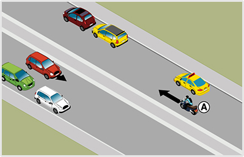
- 335. Köteles az ’A’ jelű motorkerékpár a képen látható helyen az úttest jobb szélén várakozó járművek közé húzódni? #721529
- Nem.
- Igen.
- 336. Milyen irányú a forgalom olyan úton, amelyen három, egymástól elkülönített úttest van? #721546
- A középső úttesten kétirányú, a szélső úttesteken egyirányú forgalom van.
- Mindegyik úttesten egyirányú forgalom van.
- A középső úttesten egyirányú, a szélső úttesteken kétirányú forgalom van.
- 337. Ön motorkerékpárral közlekedik. Haladhat-e folyamatosan az úttest felezővonalának közelében? #721547
- Csak kikerülés vagy előzés közben.
- Igen, minden esetben.
- Sosem.
- 338. Köteles-e lassú járművével szorosan az úttest jobb szélén közlekedni? #721550
- Igen, ha az út- és forgalmi viszonyok ezt lehetővé teszik.
- Nem.
- Csak akkor, ha 20 km/h sebességnél lassabban halad.
- 339. Mit jelent a jobbratartási kötelezettség? #721552
- Lehetőség szerint az úttest jobb szélén kell közlekedni.
- Lehetőség szerint az úttest jobb oldalán bárhol lehet közlekedni.
- Lehetőség szerint a járdaszigettől 30 cm-re kell közlekedni.
- 340. Ön lassú járművet vezet 10 km/h sebességgel. Ha az úttest mellett lassító sáv van, köteles-e itt közlekedni, ha egyébként egyenesen kíván továbbhaladni? #721554
- Nem.
- Igen.
- 341. Melyi irányból szabad elhaladni az úttesten levő járdasziget mellett, ha az nem az úttest menetirány szerinti jobb és bal oldalát választja el egymástól és a járdaszigeten nem helyezték el a kikerülési irány jelzőtáblát sem? #721555
- Útiránytól függően jobbról és balról is.
- A jobbratartás miatt kizárólag csak jobbról.
- Minden esetben csak balról.
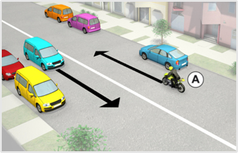
- 342. A képen látható járművek az úttest jobb szélén 15-20 méter távolságra várakoznak egymástól. Az ’A’ jelű motorkerékpár szabályosan közlekedik, ha haladása közben nem húzódik le közéjük? #722222
- Igen.
- Nem, mert a jobbra tartásnak megfelelően mindig köteles az úttest jobb széléhez húzódva közlekedni.
- 343. Köteles az ’A’ jelű motorkerékpár a képen látható helyen az úttest jobb szélén várakozó járművek közé húzódni? #722223
- Nem.
- Igen.
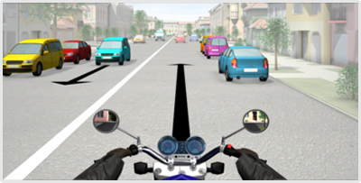
- 344. A képen látható járművek az úttest jobb szélén 15-20 méter távolságra várakoznak egymástól. Ön a kormánnyal jelzett járművet vezetve szabályosan közlekedik, ha haladása közben nem húzódik le közéjük? #722236
- Igen.
- Nem, mert a jobbra tartásnak megfelelően mindig köteles az úttest jobb széléhez húzódva közlekedni.
- 345. Ön a kormánnyal jelzett járművet vezetve köteles a képen látható helyen az úttest jobb szélén várakozó járművek közé húzódni? #722237
- Nem.
- Igen.
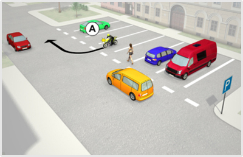
- 346. Az ’A’ jelű motorkerékpár a parkolóhelyről kíván elindulni. A tervezett manőver kapcsán van-e elsőbbségadási kötelezettsége? #723382
- Igen van.
- Nincs.
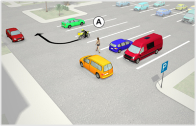
- 347. Az ’A’ jelű motorkerékpár a parkolóhelyről kíván elindulni. A tervezett manőver kapcsán van-e elsőbbségadási kötelezettsége? #723496
- Igen, van.
- Nincs.
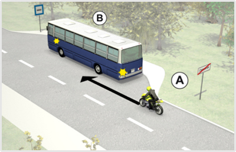
- 348. Az ’A’ jelű motorkerékpár vezetője köteles-e lehetővé tenni a ’B’ jelű autóbusz buszmegállóból történő elindulását? #723645
- Nem.
- Igen.
- Igen, de csak akkor, ha ez hirtelen fékezés nélkül megtehető.
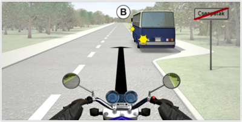
- 349. Ön a kormánnyal jelzett járművet vezeti. Köteles-e lehetővé tenni a ’B’ jelű autóbusz buszmegállóból történő elindulását? #723653
- Nem.
- Igen.
- Igen, de csak akkor, ha ez hirtelen fékezés nélkül megtehető.
- 350. Az ’A’ jelű motorkerékpár vezetője milyen módon köteles lehetővé tenni a ’B’ jelű autóbusz buszmegállóból történő elindulását lakott területen kívül? #723759
- Itt nem köteles az autóbusz elindulását lehetővé tenni.
- Lassítással, szükség esetén megállással.
- Akár hirtelen fékezéssel is.